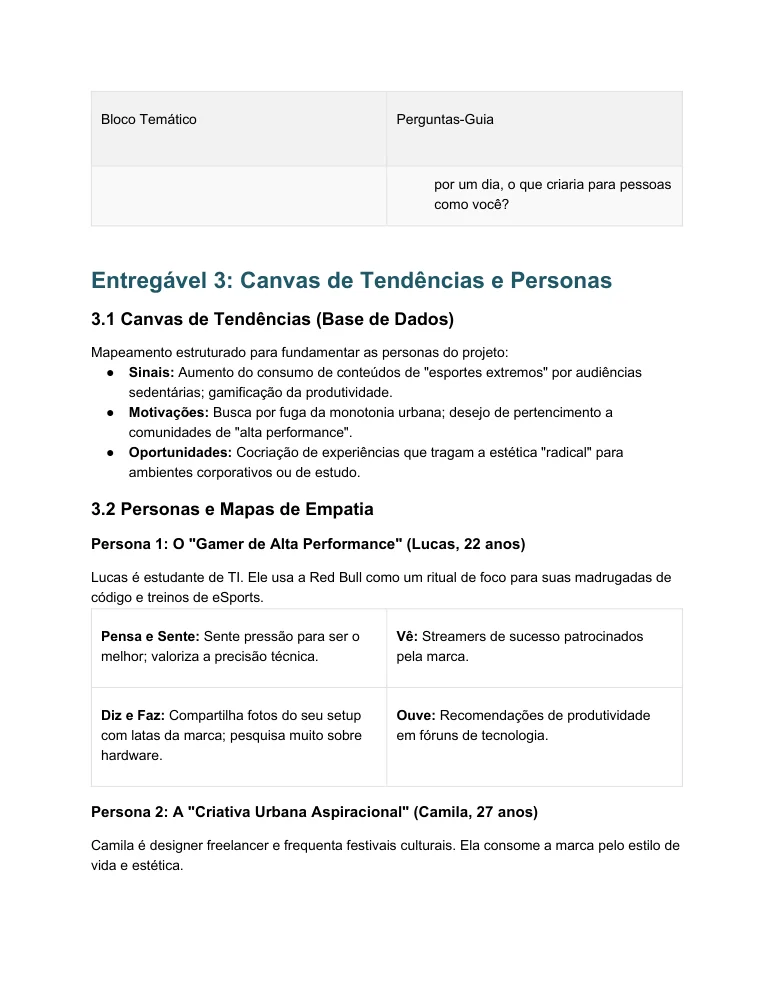

← Voltar ao portfólio
UX Research · 2026
Pré-projeto de pesquisa
Red Bull · Etnografia de marca
Investigação dos significados da marca para consumidores não atletas.

Questão
Compreender as tensões e significados que aproximam consumidores não atletas do universo da Red Bull.
Abordagem
Pré-projeto de investigação, roteiro de entrevista etnográfica organizado em blocos temáticos, canvas de tendências e personas.
Entregáveis
Planejamento de pesquisa e hipóteses sobre estilo de vida, pertencimento e motivações. Não são apresentados resultados de trabalho de campo.
Material de referência
Consulte o trabalho acadêmico para ver o conteúdo e os entregáveis em sua extensão original.